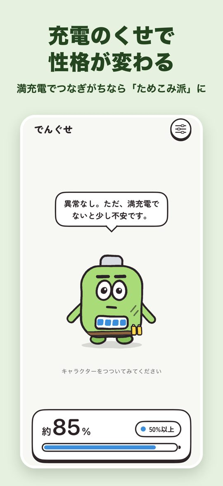
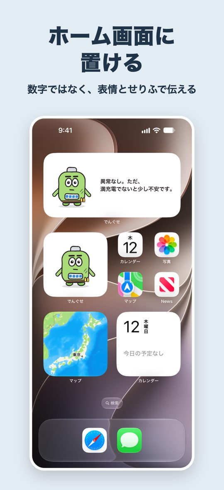
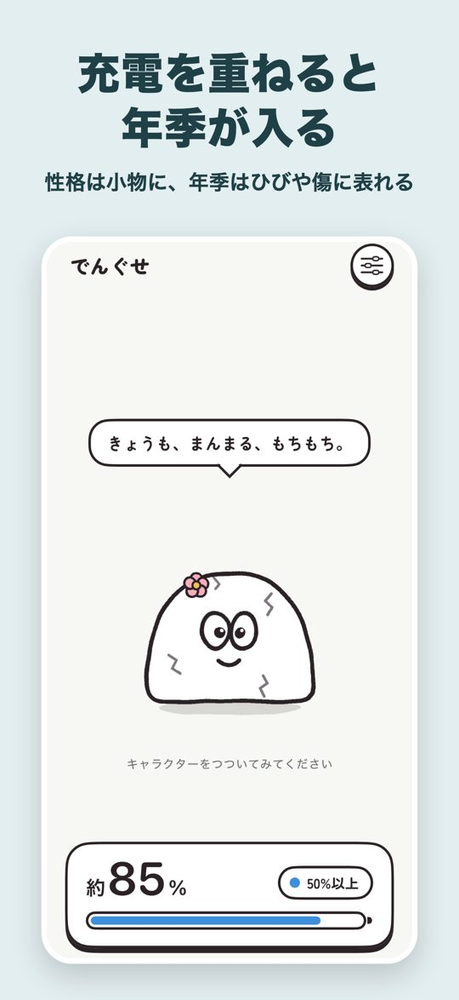
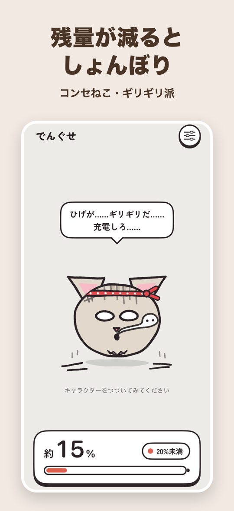
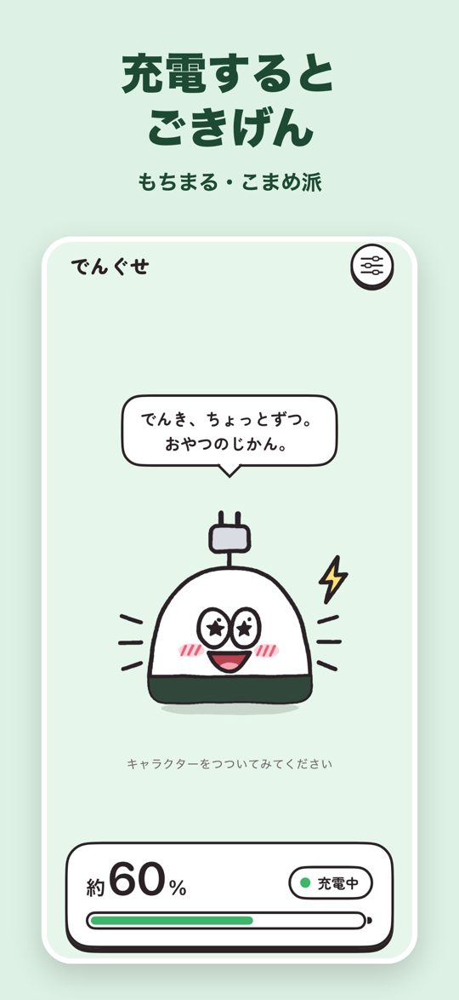
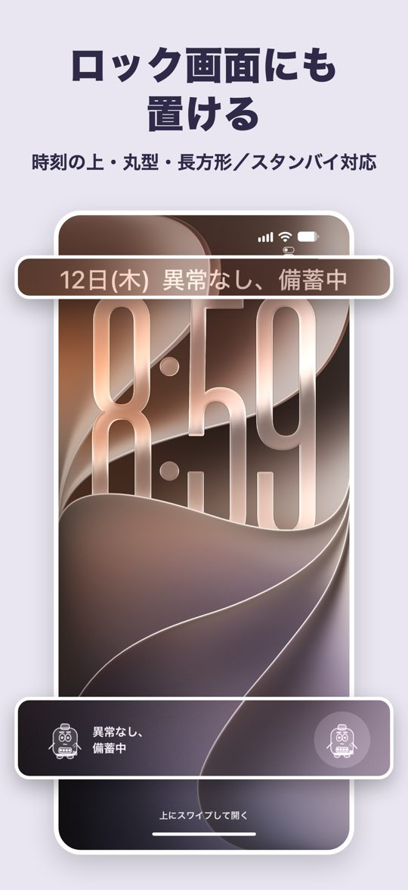
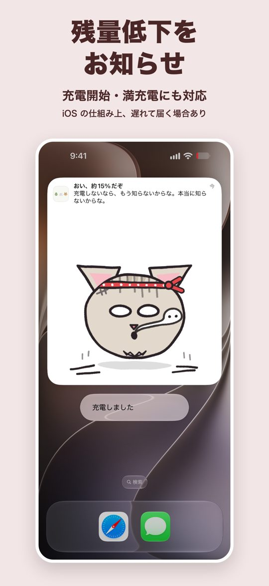
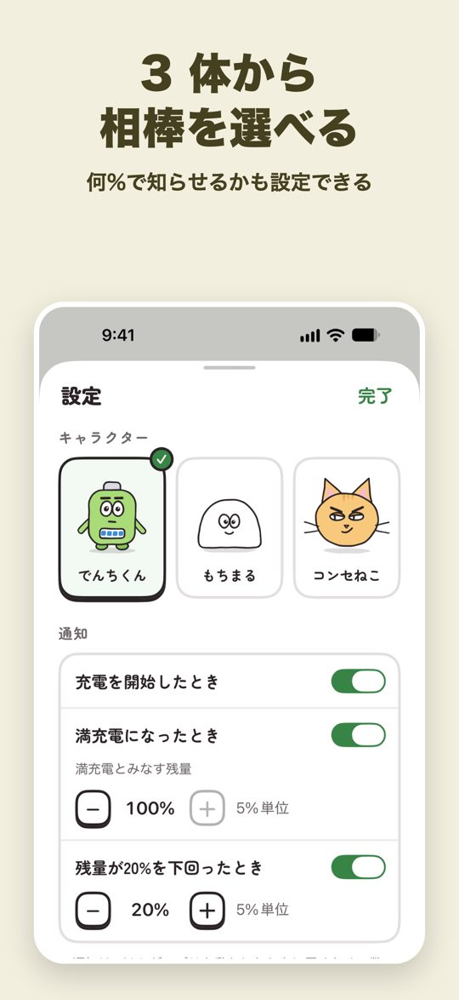
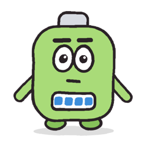
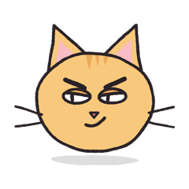

性格が変わる、バッテリーウィジェット
でんぐせ（電池＋くせ。旧名 ChargeFace）は、iPhone の電池の残量と充電の状態に合わせて、キャラクターの表情が変わるアプリです。残量が減るとしょんぼり、充電するとごきげん。充電のしかたのくせで、キャラクターの性格と見た目も変わります。ウィジェットをホーム画面やロック画面に置けば、充電のし忘れに気づけます。ウィジェットは、残量を数字ではなく、キャラクターの表情や、せりふ・ひとこと（どれが出るかは、ウィジェットの大きさによって異なります）で伝えます。
App Store で無料ダウンロード対応：iPhone（iOS 17.0 以降）／日本語のみ








充電のくせで、性格が変わる
アプリとウィジェットが記録した充電のようすから、キャラクターの性格が決まります。性格は、キャラクターが身に着ける小物と、せりふやひとことの口調に表れます。
- ためこみ派：満充電のまま、充電器につないでおく時間が長いタイプ。
- ギリギリ派：残量が少なくなるまで使ってから、充電することが多いタイプ。
- こまめ派：残量が中くらいのうちに充電し、満充電の手前で外すことが多いタイプ。
- バランス派：どのくせも目立たず、ほどよく充電しているタイプ。
性格は、3 日分の記録がそろうと決まります（それまでは、小物がありません）。小物は、キャラクターと性格の組み合わせごとに決まっています。たとえば、ためこみ派のでんちくんは予備の電池を腰に下げ、ギリギリ派のコンセねこは、はちまきを締めます。
充電を重ねると、年季が入る
充電の回数を重ねると、キャラクターの体に、傷やひびなどの変化が少しずつ増えていきます。でんちくんにはすり傷やばんそうこう、もちまるにはひび、コンセねこには傷あとや白いあごひげが増えます。変化は 3 回あり、最初の変化は、充電 50 回ほどが目安です。進み方は性格によって少し違い、ためこみ派とギリギリ派は早く、こまめ派はゆっくり進みます。
性格と見た目の変化は、充電のようすから推定した遊びです。電池の劣化を調べるものではありません（電池の状態は、設定 App の「バッテリー」で確かめられます）。
3 体のキャラクター

でんちくん：真面目な乾電池。業務連絡の口調で残量を報告します。
もちまる：のんびりしたおもち。残量が減ると焼けて膨らみ、充電中は頭からコンセントの芽が出ます。

コンセねこ：口の悪いねこ。残量が 20% を切ると、ひげが床に落ちます。
できること
- ホーム画面（小・中）、ロック画面（時刻の上・丸型・長方形）、スタンバイのウィジェットで、残量を数字ではなく、キャラクターの表情や、せりふ・ひとことで伝えます。数字を読まなくても、ひと目で充電の頃合いが分かります。せりふが出るのはホーム画面の中サイズ、ひとことが出るのはロック画面の「時刻の上」と「長方形」です。性格の小物と体の変化は、ウィジェットの絵にも表れます。残量の数字は、iPhone のステータスバーとアプリの画面で見られます。残量低下のお知らせ（通知）にも出ることがあります。
- 充電の開始、満充電、残量の低下（知らせる残量は 5〜50% で設定）を、キャラクターの絵が付いた通知でお知らせします。文面は、キャラクターと性格ごとに何種類もあります。ショートカット App などの設定は要りません。お知らせは、iOS の仕組み上、数十分から数時間遅れることがあります。
- アプリの画面でキャラクターをつつくと、場面ごとに違うせりふで反応します。
ご利用にあたって
- 無料でお使いいただけます。アカウントの登録は不要です。電池の残量と充電の記録は、端末の中だけで扱い、外部に送信しません。充電の記録は、アプリを削除すると消えます。
- 性格と見た目の変化は、アプリとウィジェットが記録した充電のようすから推定したものです。電池の劣化の度合いを示すものではありません。
- キャラクターがときどき広告を見てほしいとお願いしますが、「見送る」で断れます。広告は、「広告を見る」などのボタンを押したときだけ流れる動画です。
- 開発を支援する、任意のアプリ内課金があります。購入しても、機能は変わりません。
- お知らせと同じく、ウィジェットの更新も、iOS の仕組み上、遅れることがあります（通常は 1 時間ほどで追いつきます）。アプリを開くと、すぐに最新の状態になります。
- 低電力モードの間や、設定 App の「Appのバックグラウンド更新」がオフのときは、お知らせがほとんど届きません。当てはまるときは、アプリの設定に直し方を表示します。
- 充電の上限（80% など）を設定しているときは、アプリの設定の「満充電とみなす残量」を同じ値に合わせると、上限に達したときに満充電のお知らせが届きます。充電器をつないですぐに外すと、充電を始めたときのお知らせが届かないことがあります。詳しくはサポートをご覧ください。